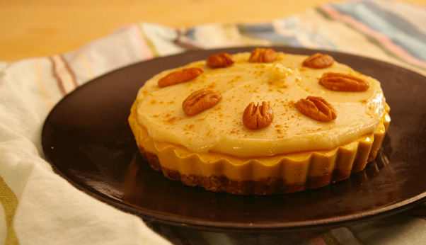

Vegan Pumpkin Pie

Description
This is a very simple, four-step, vegan pumpkin pie recipe.
Ingredients
- Premade pie crust
- Pumpkin puree
- Pecans
- Vegan whipped cream
Steps
- Pour the pumpkin puree into the pie crust.
- Sprinkle pecans on top.
- Bake the pie for 45 minutes at 450F.
- Take pie out and let rest for 25 minutes at room temperature.
- Put whipped cream on and serve.
Index